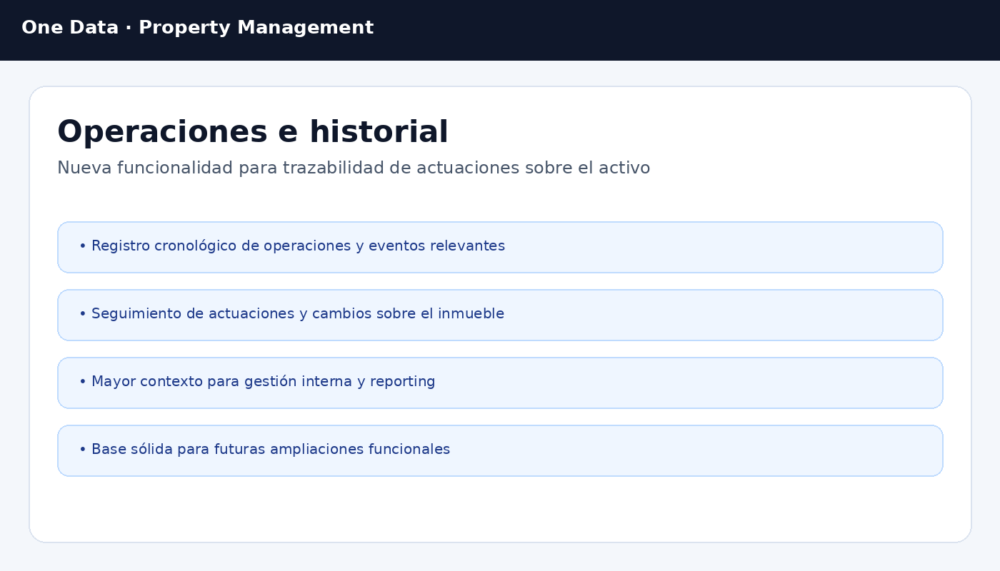

Control por activo
Cada inmueble concentra su contexto operativo: datos, estado, imágenes, relaciones, incidencias, contratos y movimientos financieros.
OneData Property Management está diseñada para gestionar activos inmobiliarios, contratos de alquiler, incidencias, liquidaciones y movimientos económicos por inmueble dentro de Business Central, con una base preparada para automatización, trazabilidad y crecimiento.
Pensada para patrimoniales, promotoras, gestoras, administradores, family office y organizaciones con cartera propia o arrendada.
Centraliza la operativa inmobiliaria y la vincula a su impacto económico: desde la ficha del inmueble y el contrato, hasta el movimiento registrado, la incidencia, la liquidación o la información fiscal.
La solución reúne la gestión del inmueble, su contrato y su actividad económica en una experiencia más unificada dentro de Business Central.
Cada inmueble concentra su contexto operativo: datos, estado, imágenes, relaciones, incidencias, contratos y movimientos financieros.
La gestión de alquileres gana trazabilidad con información contractual, vencimientos, revisiones, facturación y cierre ordenado.
El modelo FRE añade una capa financiera específica para el patrimonio inmobiliario, con diario, libro histórico e importación masiva.
La landing se ha alineado con funcionalidades existentes en la solución: activos inmobiliarios, contratos, liquidaciones, finanzas FRE, importación, incidencias, fiscalidad e integración API.
Ficha avanzada de Fixed Real Estate con información descriptiva, datos operativos, relaciones y acceso directo a movimientos y acciones relacionadas.
Modelo orientado a Lease Contract, Lease Invoice Header y procesos asociados para administrar la relación contractual y su evolución.
La solución incorpora páginas y estructura específica para Liquidación Contrato, con soporte para motivos, importes y documentación vinculada al cierre.
Motor financiero específico para registrar movimientos por activo inmobiliario, con diario operativo, role center y libro histórico.
La solución ya contempla importación desde Excel tanto para FRE como para diarios generales, con vista previa, validación y sugerencia de activo.
Existe gestión de incidencias inmobiliarias con seguimiento, comentarios, adjuntos y notificaciones por correo en distintos estados del proceso.
El modelo FRE no se limita a mostrar ingresos y gastos. Añade procesos específicos para importar, validar, registrar y consultar movimientos económicos ligados a cada activo inmobiliario.
Registro manual, importación Excel o extracto bancario.
Vista previa de importación, sugerencia de inmueble y validación de datos.
Posting en diario FRE con generación de movimientos históricos.
Acceso desde la ficha del activo, role center y listados de ledger.
Base para seguimiento económico, imputación y reporting por inmueble.
La solución ya incorpora capacidades funcionales relacionadas con IRPF y puntos de integración orientados a escenarios SaaS y portales.
Cálculo y recálculo de líneas con Grupo IRPF, porcentaje de retención y base fiscal dentro del proceso de alquiler.
La landing mantiene el encaje natural con OneData Fiscal para modelos tributarios y tratamiento fiscal especializado.
Existen endpoints como API Health Check y FRE Bank Statement API, base para portales, servicios externos y procesos automatizados.
La estructura del proyecto ya deja espacio para integración con portal del inquilino, procesos móviles y evolución modular de la solución.
Las vistas actuales del producto refuerzan el mensaje de la landing: control del activo, seguimiento contractual y operativa financiera en el mismo entorno.

Vista central del inmueble con acceso a contratos, incidencias, datos técnicos y movimientos relacionados.

Seguimiento de contratos, contexto del arrendamiento y estructura preparada para facturación y liquidación.

Base visual para explicar la trazabilidad operativa y financiera por activo inmobiliario.
Respuestas rápidas para situar la solución dentro de Business Central y explicar su alcance funcional actual.
Sí. OneData Property Management está concebida como extensión AL para Business Central y utiliza páginas, procesos y modelos de trabajo integrados en el entorno estándar.
Cubre contratos de alquiler, facturación, incrementos de precio, liquidaciones, incidencias, adjuntos, movimientos FRE, importación Excel, extractos bancarios, IRPF y puntos de integración API.
Sí. La solución incorpora FRE Journal y FRE Ledger, con diarios, plantillas, import preview, role center y consultas por activo inmobiliario.
Sí. La versión actual y la línea evolutiva del producto apuntan a escenarios de mayor complejidad operativa, integraciones externas y crecimiento modular.
Podemos orientar la demostración a activos, contratos, finanzas FRE, integración fiscal o procesos de importación y explotación económica según el escenario de tu organización.